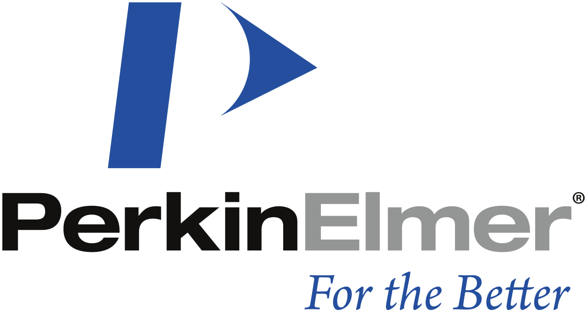

Experiences


Data science enthusiast and software engineering student interested in application of next-generation technologies
I am a Software Engineering student studying at the University of Waterloo graduating in April 2024. I have proven experience in the fields of data science, machine learning and general software engineering.
Asides from passions in technology, I am also heavily interested in public speaking, entrepreneurship, and leadership. I have led Calgary's Mayor's Youth Council, served as President of my school's Student Council and have participated in provincial and national debates. Currently, I am looking for opportunities that combine my passions of technology and leadership.
I have worked on numerous projects to improve my software engineering skills. Please take a look!
I have always loved to tinker around with music and listen to new genres. While listening to some rock recommended by friends, I thought of using machine learning to classify songs based on the year it was created. Through spectrogram analysis, I found a load of interesting insights, from how tempo has changed across the years to the importance of zero-crossing rates in truly catchy songs.
This project can be broken into a couple of steps:
Skills/concepts used:

As part of a team of 4 other software engineering students, I helped build a robot that could read pseudocode from a whiteboard and convert it into a real code snippet on a live web editor. I was personally responsible for creating a semantic search system which could map pseudocode to code snippets and integrating the various components of the project (robot hardware, computer vision, semantic search and React web editor).
Skills/concepts used:
During Hack the North 2019, my team created a web app that recommends shopping places based on budget preferences and locations. Using a Flask web app, we created an interface where users can input the percentage that they allocate for certain budget categories (food, auto, clothes, etc.) and their location. We then used a custom-built KNN-based algorithm that compares the user's budget preferences to over 10,000 virtual budgets from TD's Da Vinci API. Using our algorithm, we can identify customers who share similar budget preferences and recommend shops to teh user based on the shopping habits of virtual customers.
Skills/concepts used:
As a person interested in politics and government, election season is a certain treat. For the 2019 general election, I wanted to analyze Prime Minister Justin Trudeau's official speech transcripsts and apply sentiment analysis as well as topic modelling.
Skills/concepts used:

Using R, I created several machine learning models that can predict whether a given tumor is benign or malignant based on its physical features (width, length, radius, perimenter). In this project, I created several unique visualizations (violin plots, swarm plots and heatmaps) to identify unique patterns and utilized ensemble machine learning to boost model accuracy. My model was able to achieve and accuracy of 97%
Skills/concepts used:
Using R and Python, my team created several regression based models that predicted violent crime rate within 0.1 RMSE using various community, sociopolitical and economical factors.
We were invited to the national Big Data Challenge conference to present our results. Due to our incisive analysis on the leading correlated variables to violent crime rates and our unique policy suggestions to tackle this virulent problem, we were awarded the $1000 SAS Analytics award for the most analytically incisive project.
Skills/concepts used:

As part of the annual ATB Datathon, my team developed a three prong solution to the multibillion dollar impact of plant diseases on the wider Canadian economy.
As part of the team, I developed a convolutional neural network using Keras that could detect 20 different types of plant diseases with an accuracy of 95%. I also created a simple React app where users can pinpoint instances of plant diseases on their lands using the Google Maps API. Lastly, my teammate created a spatial probability model that could predict the spread of disease and overlay it on a Google Map
Skill/concepts used:

In my 2017-2018 science fair project, I created several machine learning algorithms, including stacked ensemble models, that could diagose Alzheimer's disease using 4 metabolites from the L-arginine cycle
This project won several accolades. I won a gold medal and the Pacific Mathematical Sciences Award at the Calgary Youth Science Fair. At the Canadian national science fair, I won the Youth Can Innovate Award and the Statistical Society of Canada award for my innovative project and my use of math.
Skill/concepts used:

Using open-source proteomics data, I created a non-negative matrix factorization-based algorithm to identify biomarkers for Alzheimer's disease. Furthermore, I developed a machine learning model framework that can predict Alzheimer's diagnoses with extremely high accuracies.
This project won several awards at the Calgary youth science fair (Gold Medal, Life/Medical Sciences award, University of Calgary Discovery award) and was selected to represent Canada at the Intel International Science and Engineering Fair in Phoenix in 2019. At the international fair, the project won an honorable mention for its use of statistical theory.
Skills/concepts used:

Alberta High Team Attack holds an annual math contest with a new team-based format. This novel type of competition emphasizes teamwork and cooperation rather than only mathematical ingenuity.
I was responsible for creating their website using Bootstrap. Skills/concepts that I used:
A Plus Tailors is a local tailorshop that reached out for help in constructing a website to reflect their new store location.
I was responsible for creating their website. Skills/concepts that I used:
The Calgary Science Spelling Bee is an organization that attempts to improve scientific literacy among junior high students through the fun format of spelling bees.
I was responsible for creating their website. Skills/concepts that I used: